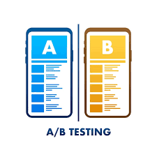

In this Kaggle notebook, I explored the Titanic dataset and built several machine learning models to predict which passengers would survive the shipwreck. I used a variety of classification algorithms, including logistic regression, decision trees, and support vector machines, and compared their performance using cross-validation. I then used an ensemble approach to combine the predictions of these models and improve their accuracy. Overall, my best-performing model scored in the top 15% of the leaderboard.
Machine Learning, Classification, Ensemble, Hyperparameter Tuning
In this Kaggle notebook, I explored the problem of forecasting house prices using regression models and stacking techniques. I used a variety of regression algorithms, along with regularization and feature selection techniques to build a robust forecasting model. I also implemented a stacking technique that combined the predictions of multiple regression models to improve accuracy. Overall, my forecasting results were among the top 3% of the leaderboard.
Regression, Stacking, Data Cleaning, Data Visualization, Regularization, Feature Selection
In this Kaggle notebook, I explored the problem of predicting tweets related to disasters using NLP techniques and transfer learning with BERT. I used a variety of NLP techniques, including tokenization, stop word removal, and stemming, to preprocess the text data. After data preprocessing, I implemented transfer learning using pre-trained BERT models in TensorFlow to derive high prediction accuracies. Overall, the testing results of my model were among the top 5% of the leaderboard.
NLP, Text Classification, Text Cleaning, tensorflow, Transfer Learning, BERT, DistilBERT
In this Kaggle notebook, I explored the problem of building recommendation systems for anime using two popular techniques: content-based recommendation and collaborative filtering. I used the Surprise library to implement collaborative filtering, and also built a content-based recommendation system that used metadata such as genre, type, and studio to recommend similar anime.
Recommendation System, Content-based Recommendation, Collaborative Filtering, tf-idf, Cosine Similarity, SVD, surprise
In this Kaggle notebook, I explored the problem of classifying fraud credit card transactions using different methods and metrics to deal with imbalanced datasets. I used a variety of machine learning algorithms, including logistic regression, decision trees, and random forests, and compared their performance using various metrics such as precision, recall, and F1-score. I also implemented techniques such as undersampling, oversampling, and synthetic data generation to deal with the imbalanced nature of the dataset.
Classification, Imbalanced Datasets, F-1 Score, Precision-Recall Trade-off, Resampling, SMOTE, ROC, AUC
In this Kaggle notebook, I explored the problem of predicting whether an image is a fire or non-fire image using convolutional neural network (CNN) and transfer learning models in PyTorch. My final model achieved an incredible accuracy of 98%.
Image Classification, Convolutional Neural Network, MobileNET, Image Transformation, PyTorch
In this Kaggle notebook, I explored the problem of testing which video game version results in higher player retention using A/B testing. I discussed the different hypothesis testing required under different circumstances and assumptions. I also provided insights on how to interpret the results and how to make data-driven decisions based on the findings.
A/B Testing, Hypothesis Testing, Outliers, Normality, P-value

In this Kaggle notebook, I performed a comprehensive exploratory data analysis (EDA) on a dataset related to the video game industry. I used various data analysis and visualization techniques to explore patterns, trends, and relationships in the data. I investigated different aspects of the industry, including game genres, platforms, sales, and ratings, and provided insights on the most popular and successful games and platforms. Overall, my analysis uncovered valuable information about the video game industry, highlighting the importance of EDA in gaining a deeper understanding of complex datasets.
EDA, Bar Charts, Pie Charts, Line Graphs, Dual-Axis, Stacked